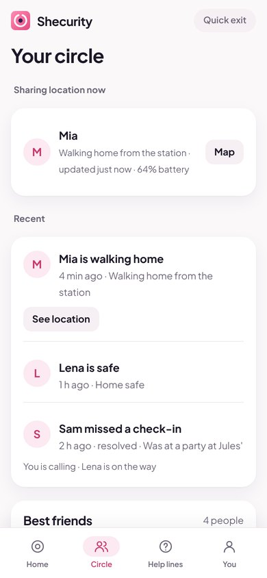

The free safety app that keeps your people close
Shecurity is a personal safety app for women and girls. One press sends an SOS with your live location to the people you trust.
Works on iPhone and Android. Add it to your home screen in two taps.

Safety tools for walking home, dates, rides and nights out
Every feature below is free. Nothing is locked behind a subscription.
SOS alert with live location
Press and hold the button. Your circle gets an alert with your live location, and can reply that they're on the way.
Your own safety circle
Invite family and close friends with a link. Only people you invite can ever see you. No strangers, no public map.
Walk me home
Share your location live while you walk, and let your circle know the moment you're home safe.
Check-in timer
Going somewhere uncertain? Set a timer. If you don't check in, your circle is alerted automatically.
Fake call
Get a realistic incoming call with a voice, to step out of an uncomfortable situation politely.
Loud siren
One tap plays a loud alarm and flashes the screen to draw attention and scare someone off.
Ride safety
Save the plate and driver before you get in a taxi or rideshare, and share the trip with your circle.
First date mode
Note who you're meeting and where, set a check-in, and have a fake call ready if you want to leave.
Share your plans
Post where you're going and who you're with, like a story. Your circle sees it for 1 to 48 hours, then it disappears.
Set up in under two minutes
Open and add to home screen
Open Shecurity in your browser and tap Add to Home Screen. No store, no sign-up form.
Invite your circle
Send an invite link to two or three people you trust. They join for free.
Press and hold SOS when you need it
Your circle is alerted with your live location, and you see who's coming.
Calm, clear and easy when it matters


A safety app you can actually trust
- The safety features are free forever. No paywall in an emergency.
- No ads, ever. Nothing interrupts you when you need help.
- Only people you invite can see you.
- Location is shared only when you choose, and you can stop it any time.
- We never sell or share your data.
- Delete your account and everything in it with one tap.
Frequently asked questions
Is Shecurity really free?
Yes. Every safety feature is free forever, with no ads and no trial. Later there may be an optional Shecurity Plus for extras that cost money to run, like automatic text messages, but SOS, your safety circle, live location and check-ins will always stay free.
Do I need to download it from an app store?
No. Shecurity is a web app: open it in Safari or Chrome and tap Add to Home Screen. It then opens full screen like a normal app, works offline and takes almost no storage.
Does it work on iPhone and Android?
Yes, on any recent iPhone or Android phone. On iPhone, add it to your home screen first so you can receive alerts from your circle.
Who can see my location?
Only the people in your safety circle, and only while you choose to share it: during an SOS, a walk or an expired check-in. There is no public map and no stranger network. You can stop sharing with one tap.
Does Shecurity call the police for me?
No. Shecurity alerts the people you trust and shows your local emergency number with one tap. If you are in danger right now, call 911, 112, 999 or 000 first.
Do my friends need the app too?
To join your circle and get instant alerts, yes, and it's free for them too. Even without it, your SOS can send a regular text message with your location to anyone in your contacts.
Is my data sold or shared?
Never. There are no ads and no trackers. Your contacts and notes stay on your phone; circle alerts are stored in the EU and deleted automatically after 30 days. Read the privacy policy.
Practical tips, free to read
How to walk home safely at night
Plan the route, share your walk, and know what to do if something feels off.
Read the guideFirst date safety tips
Verify, meet in public, tell a friend, and set a check-in before you go.
Read the guideHow to set up emergency SOS on iPhone and Android
Turn on your phone's built-in SOS and add a one-tap Shecurity shortcut.
Read the guideFeel safer tonight, for free
Open Shecurity, invite two people you trust, and you're set. It takes less time than reading this page.
Open Shecurity